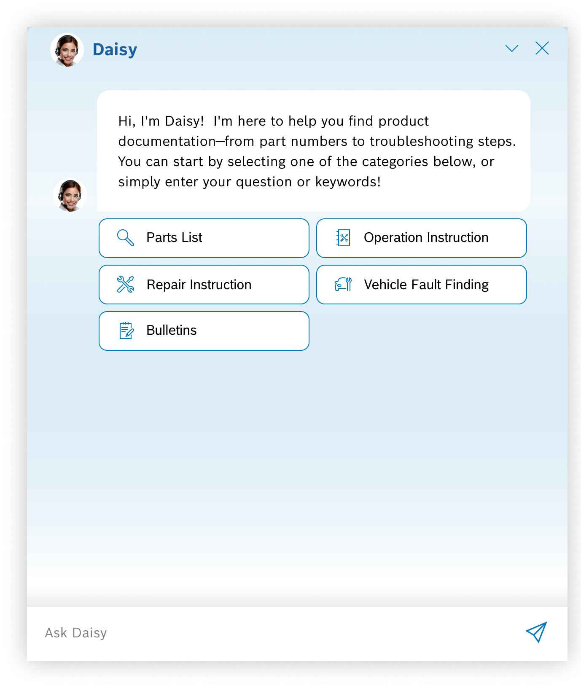
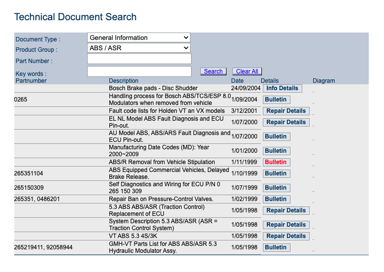
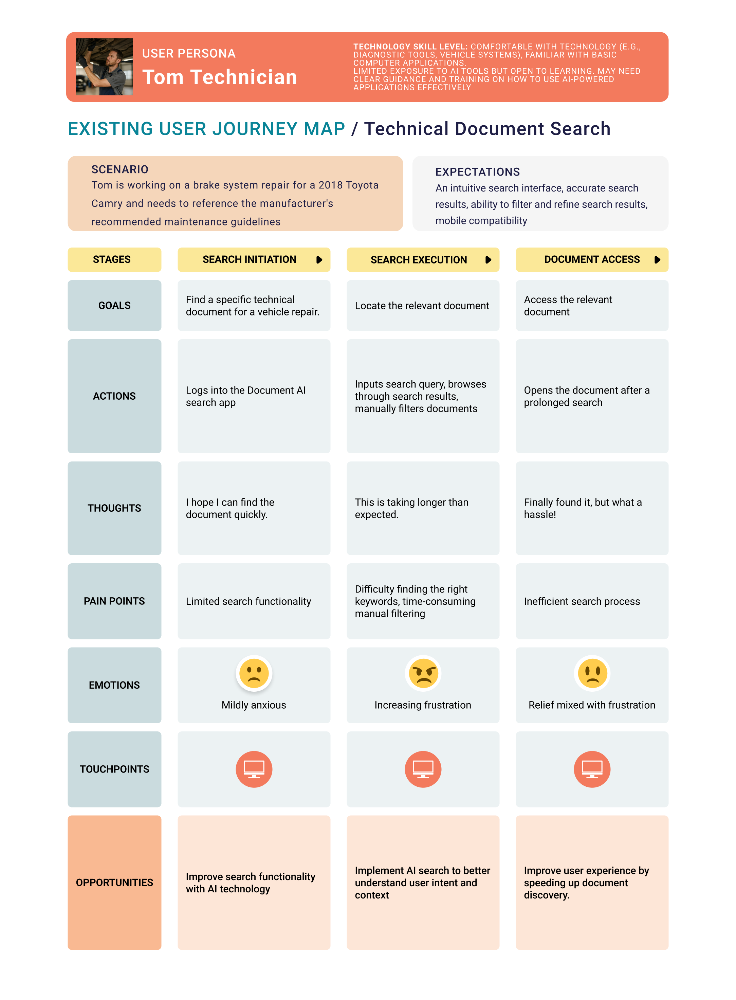
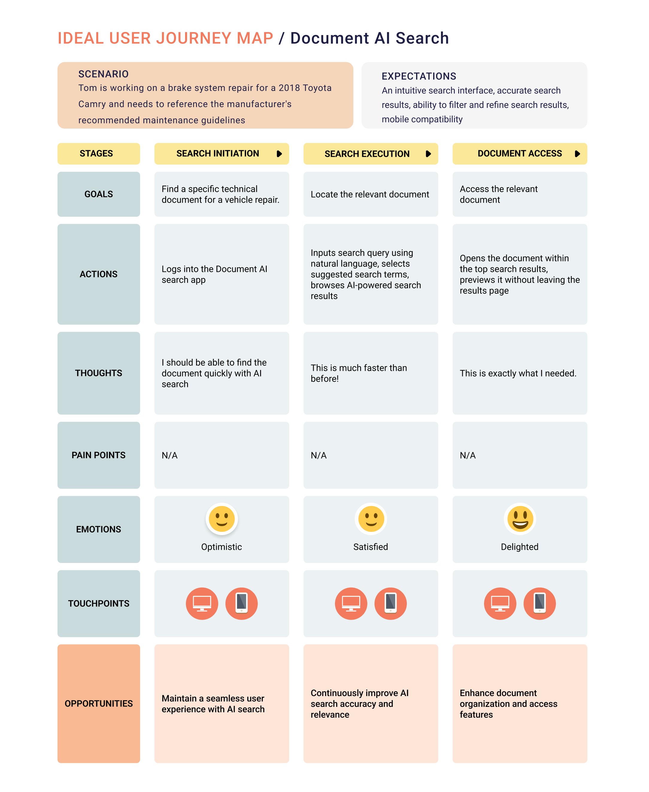
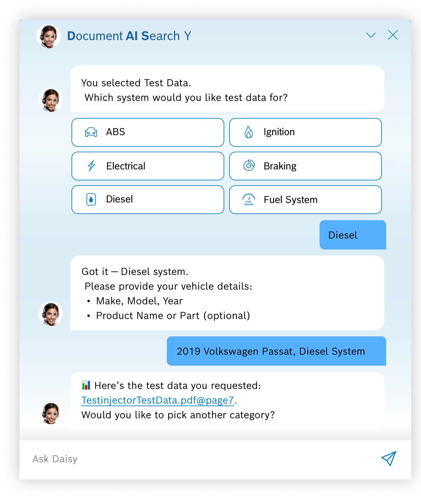

Overview
An AI-powered document retrieval and conversational interface designed for automotive workshop technicians, helping them quickly access technical information across large document repositories, from parts lists and repair instructions to fault-finding guidance.
The product is actively used by technicians today, and has since evolved beyond document retrieval to provide repair advice directly within the interface.

Problem Context
Automotive workshops operate in time-critical environments. Technicians need to diagnose and repair vehicles quickly and accurately, and access to the right technical documentation is essential to getting that done.
Bosch service centres had an existing document search tool, but it was old-school. Technicians had to know exactly what to search for and navigate through long PDFs to find what they needed. In a fast-paced workshop environment, that friction added up.
The real insight: technicians weren't looking for documents. They were trying to complete repairs.

Research & Discovery
There was no direct access to technicians during the design phase. Instead, insights came through a customer liaison in Australia who worked directly with service centres — fielding our questions to technicians on our behalf and relaying findings back to the team.
This informal but structured feedback loop surfaced a critical pattern: technicians almost always started with a symptom, procedure, or fault-finding question — but their end goal was almost always the same: identify the correct part number to proceed with ordering and completing the repair..

Key insights:
- Technicians think in tasks and symptoms, not document names or file structuresn
- Accurate part numbers are critical — wrong parts mean repeat repairs, delays, and cost
- The existing search tool required precise query phrasing that technicians didn't naturally use
This understanding shaped the overall UX strategy.

Design Approach
I reframed the experience from “finding documents” to “supporting repair tasks.”
This influenced query phrasing guidance, response structure and prioritization of procedural information over document metadata.
- Task-Oriented Entry Points
Rather than relying on a blank search or chat input, the experience provides clear, task-based entry points such as parts lists, repair instructions, and fault finding. This reduces cognitive load and helps technicians quickly narrow the scope of information they are looking for.
- Guided Conversational Flows
Conversational interactions are used to progressively guide users from broad task context toward system selection and part identification, supporting natural workflows without requiring perfectly phrased queries.
- Progressive Disclosure
AI responses are structured to surface the most relevant information first - such as key steps or part numbers, while allowing users to access additional detail or source documentation as needed. This avoided overwhelming users with long PDFs while maintaining traceability to source material.

Throughout the refinement phase, feedback from the Australian team informed ongoing improvements to response structure, query handling, and the overall flow.
💭 Reflection
In operational environments, AI usability is less about flexibility and more about trust and task completion. While conversational interfaces can feel powerful, technicians valued experiences that helped them reach a clear outcome—particularly accurate part identification—with minimal friction.
Balancing conversational freedom with structured guidance proved essential. Designing the AI as a supportive navigation layer, rather than an all-knowing assistant, helped set appropriate expectations and increased confidence in the system’s outputs.